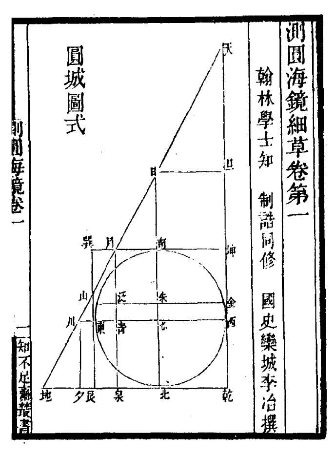

Geometry is the study of space in relation with distance, shape, size, and position of figures.
A circle is defined as a set of points equidistant from a central point, this distance is the circle's radius.
Trig Function Definitions
| Function | Definition |
| sin(α) | opposite / hypotenuse |
| cos(α) | adjacent / hypotenuse |
| tan(α) | opposite / adjacent |
Solving Right Triangles
| Know | Want | Compute |
| α, adjacent | opposite | = adjacent * tan(α) |
| hypotenuse | = adjacent / cos(α) | |
| α, opposite | adjacent | = opposite / tan(α) |
| hypotenuse | = opposite / sin(α) | |
| α, hypotenuse | adjacent | = hypotenuse * cos(α) |
| opposite | = hypotenuse * sin(α) |
Circle
Distance
(x1-x0)²+(y1-x0)²=r² If the circle is centred at the origin (0, 0), then the equation simplifies to x²+y²=r²
double
distance(Point2d a, Point2d b)
{
return sqrt((a.x - b.x) * (a.x - b.x) + (a.y - b.y) * (a.y - b.y));
}
Angle
To find angle, in radians, between two points:
double
angle(Point2d a, Point2d b)
{
return atan2(b.y - a.y, b.x - a.x);
}
Position
To find a point on a circle:
Point2d
PtCircle2d(Point2d c, double r, double angle)
{
return Pt2d(
c.x + r * cos(angle),
c.y + r * sin(angle));
}
Parallel
The slope of the first line is m1=(y2−y1)/(x2−x1) and the slope of the second is m2=(y4−y3)/(x4−x3). The lines are parallel if and only if m1=m2.
Let'?'s say we are given the center point of the circle and its radius. We can now create a loop which iterates from Center.x-Radius to Center.x+Radius or maybe even downwards from Center.x+Radius to Center.x-Radius. Now we have one point on the radius which is the center of the circle and one point which we have the X to, which is located on the circumference. We can then calculate the Y position of this point using the distance formula as in:
Radius = Sqrt ((P1.x - P2.x) ^2 + (P1.y - P2.y) ^2)
cos(x) = 1 - (x^2/2!) + (x^4/4!)... (An even function) sin(x) = x -(x^3/3!) + (x^5/5!).... (An odd function) add both series together but keep all signs positive and you have e^x = 1 + x+ (x^2/2!) + (x^3/3!)..... So e^ipi + 1 =0
Tau is the Circle Constant.
Degree Minute Position to Decimal Position
d = M.m / 60 Decimal Degrees = Degrees + .d Example: To convert 124° 44.740, a DMS coordinate, to DD. 44.740(m.m) / 60 = 0.74566667 124(degrees) + 0.74566667(.d) = 124.0.74566667 And so 124° 44.740 is 124.0.74566667 in Decimal Degrees.
Fractals are infinitely complex patterns that are self-similar across different scales.

mandelbrot.c
void
mandel(Uint32 *dst)
{
int width = 640, height = 480, max = 254;
int row, col;
for(row = 0; row < height; row++) {
for(col = 0; col < width; col++) {
double c_re = (col - width / 1.5) * 4.0 / width;
double c_im = (row - height / 2.0) * 4.0 / width;
double x = 0, y = 0;
Uint32 iteration = 0;
while(x * x + y * y <= 4 && iteration < max) {
double x_new = x * x - y * y + c_re;
y = 2 * x * y + c_im;
x = x_new;
iteration++;
}
putpixel(dst, col, row, (iteration % 2) * 0xFFFFFF);
}
}
}
Mandelbrot without fixed point
See the complete SDL2 source.
mandel(-2.0 * NORM_FACT, -1.2 * NORM_FACT, 0.7 * NORM_FACT, 1.2 * NORM_FACT);
typedef unsigned char Uint8;
typedef signed char Sint8;
typedef unsigned short Uint16;
typedef signed short Sint16;
#define NORM_BITS 8
#define NORM_FACT ((Sint16)1 << NORM_BITS)
Uint16 WIDTH = 600;
Uint16 HEIGHT = 400;
int
iterate(Uint16 real0, Uint16 imag0)
{
Uint8 i;
Sint16 realq, imagq, real = real0, imag = imag0;
for(i = 0; i < 255; i++) {
realq = (real * real) >> NORM_BITS;
imagq = (imag * imag) >> NORM_BITS;
if((realq + imagq) > (Sint16)4 * NORM_FACT)
break;
imag = ((real * imag) >> (NORM_BITS - 1)) + imag0;
real = realq - imagq + real0;
}
return i;
}
void
mandel(Sint16 realmin, Sint16 imagmin, Sint16 realmax, Sint16 imagmax)
{
Uint16 x, y,
deltareal = (realmax - realmin) / WIDTH,
deltaimag = (imagmax - imagmin) / HEIGHT,
real0 = realmin,
imag0;
for(x = 0; x < WIDTH; x++) {
imag0 = imagmax;
for(y = 0; y < HEIGHT; y++) {
putpixel(pixels, x, y, iterate(real0, imag0));
imag0 -= deltaimag;
}
real0 += deltareal;
}
}